Evals for Data Diversity
LLM生成数据的多样性评估
引言：为什么合成数据需要多样性？
使用大型语言模型（LLMs）生成合成数据已成为一种流行的方法。然而，一个常见的问题是，LLM直接生成的输出往往具有重复性。
为了提高生成数据的多样性，我们通常会采用一些技术，例如：
- 采样参数： 提高温度（temperature）、使用核采样（nucleus-sampling）或 Top-K 采样。
- 属性生成： 预先生成各种属性（如主题、风格、长度、角色等），并将其随机插入到提示中。
- 解码后聚类： 过量生成大量文本，然后通过聚类中心或语义哈希进行去重。
这就引出了一个关键问题：我们如何系统地评估这些技术对多样性的影响
本文将概述学术界已有的、用于衡量LLM生成文本Diversity的各种自动评估指标，涵盖词汇、语义和句法三个维度。
一、词汇多样性指标 (Lexical Diversity Metrics)
这类指标用于捕捉文本中词语、短语、主题和 N-gram 在表面上的重复程度。
1. 独特 N-gram (Distinct-k)
- 基本概念： 源自语言学中的“型符比”（type-token ratio）。
- 计算方式： 计算生成的整个数据集中独特 N-gram 的数量与总 N-gram 的数量之比。
例如，对于文本 “As an AI language model” 和 “As an AI model”：
- 总 Unigram (1-gram) 数量：9
- 独特 Unigram 数量：5 (As, an, AI, language, model)
- 多样性得分： 5/9 ≈ 0.55
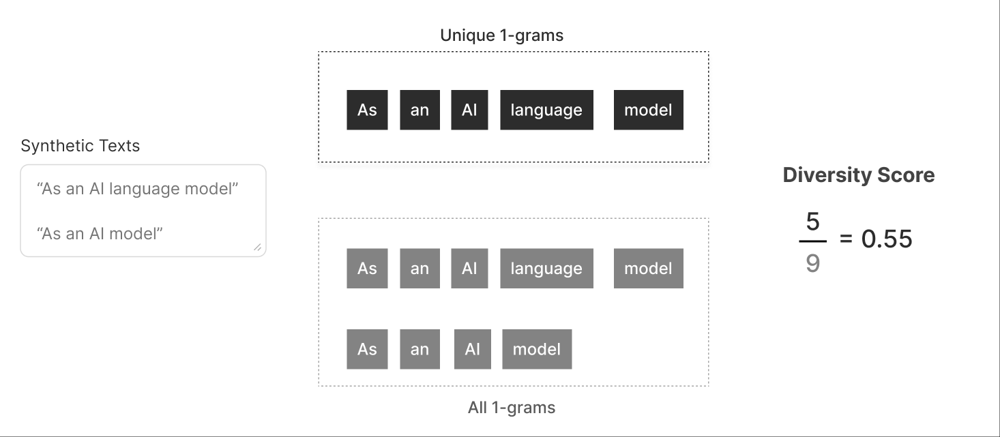 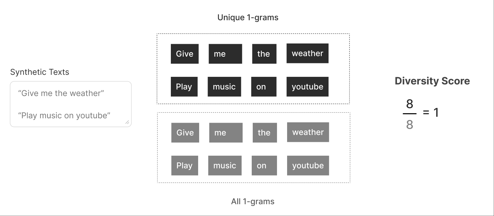
这个概念可以扩展到 Bigram (k=2)、Trigram (k=3) 等，并可以分别组合成一个分数。
2. N-gram 熵 (Ent-n)
- 基本概念： 在理想情况下，LLM 生成的所有文本都应该是独特的，任何 N-gram 都不会重复超过一次。
- 计算方式： 通过收集文本中所有独特的 N-gram，计算它们的频率，从而得到 N-gram 的概率分布。然后，计算该概率分布的信息熵。
- 判断标准： 分布越均匀（重复越少），熵值越高，多样性也越高。
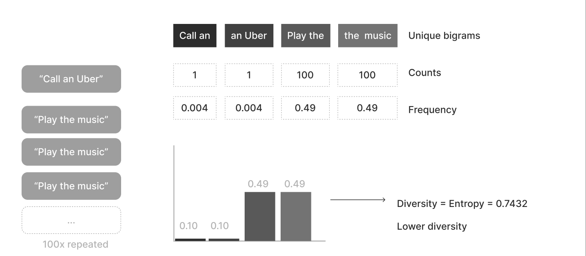
3. 压缩比 (Compression Ratio)
- 基本概念： 借鉴用于评估压缩算法的压缩比概念。
- 计算方式： 使用如 Gzip 等算法压缩文本，计算压缩文件大小与原始大小之比。
- 判断标准：
- 比率越高（如 16.258），表明文本可压缩性越高，冗余度高，因此多样性越低。
- 多样性可以计算为压缩比的倒数，从而得到一个 0 到 1 之间的分数。
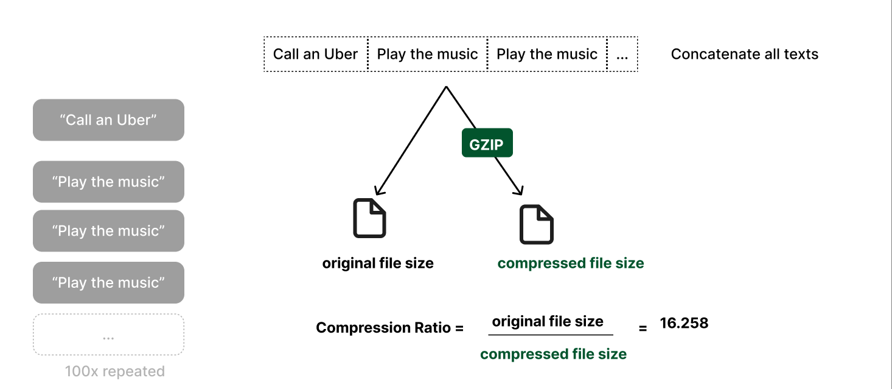
二、语义多样性指标 (Semantic Diversity Metrics)
这类指标关注文本在语义上的多样性，并依赖于embeddings。它们可以处理词汇重叠为零但意义相似（例如，“Play the music” 和 “Start a song”）的情况。
1. 嵌入多样性 (Embedding Diversity)
- 计算方式：
- 使用编码器（如 Sentence-Transformers）计算所有生成文本的Embedding vector。
- 计算所有独特文本对之间的余弦相似度（Cosine Similarity）。
- 取这些相似度的平均值。
- 判断标准： 将平均相似度转换为多样性得分（如：1 − 平均余弦相似度），得分越高表示多样性越高。
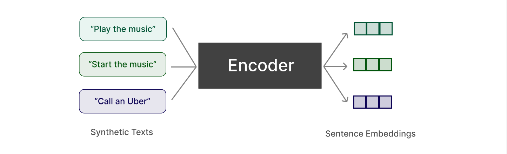 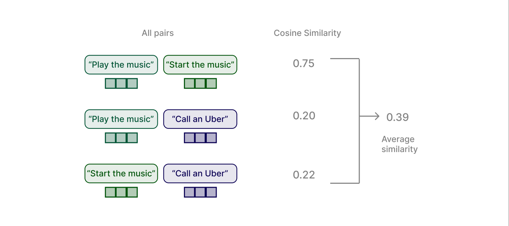
2. DCScore
- 计算方式：
- 计算文本嵌入的两两相似度矩阵(做法和1相同)。
- 对该矩阵应用 Softmax 函数。
- 计算 Softmax 矩阵对角线元素的平均值。
- 判断标准： 对角线元素表示文本相对于所有其他文本（包括自身）与自身的相似度“概率”。平均值越接近 1，表示文本与其自身的相似度远高于与其他任何文本的相似度，从而意味着整体数据集的多样性高。
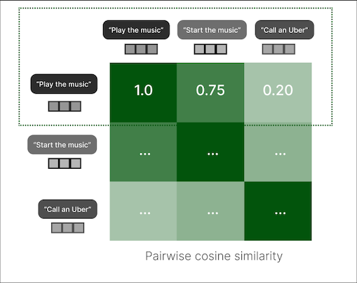 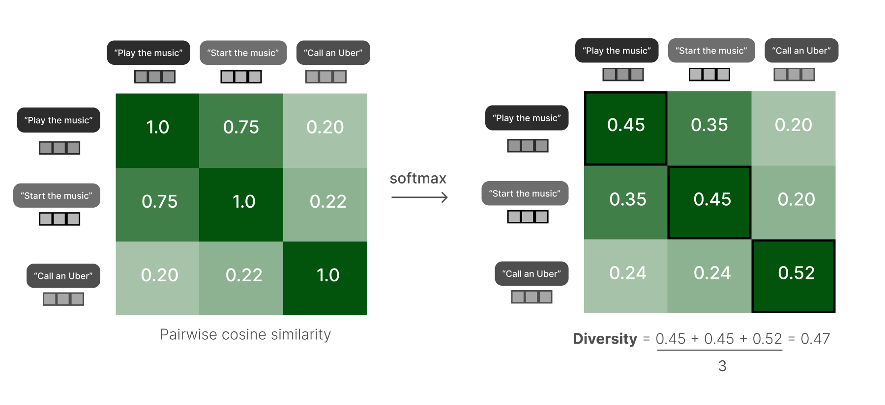
3. 聚类惯性 (Cluster Inertia)
- 基本概念： 重用聚类算法中用于衡量聚类质量的“惯性”指标。
- 计算方式：
- 将文本嵌入聚类到 K 个簇（如 K = 10）。
- 计算惯性 (Inertia)：即簇内所有点到其质心（centroid）的平方距离之和。
- 判断标准： 如果文本多样，它们会离质心更远，导致惯性更大，因此惯性被视为多样性的一个代理指标。
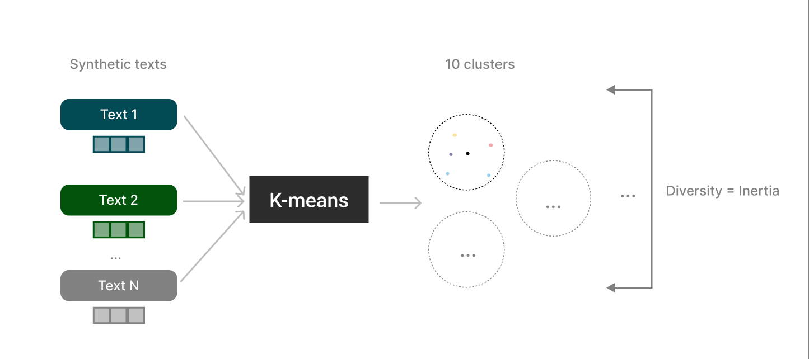
三、句法多样性指标 (Syntactic Diversity Metrics)
这类指标捕捉文本在底层语法结构上的多样性。
1. 压缩比 - 词性 (CR-POS)
- 基本概念： 重用“压缩比”的概念，但应用于文本的句法表示。
- 计算方式：
- 使用词性标注器（POS tagger）将所有生成文本转换为其词性标签序列（即句法表示）。
- 将所有词性标签序列拼接成一个长字符串。
- 计算这个长字符串的压缩比。
- 判断标准： 压缩比越高，表示句法模板重复越多，多样性越低。多样性得分取压缩比的倒数。
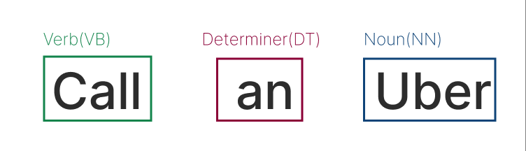 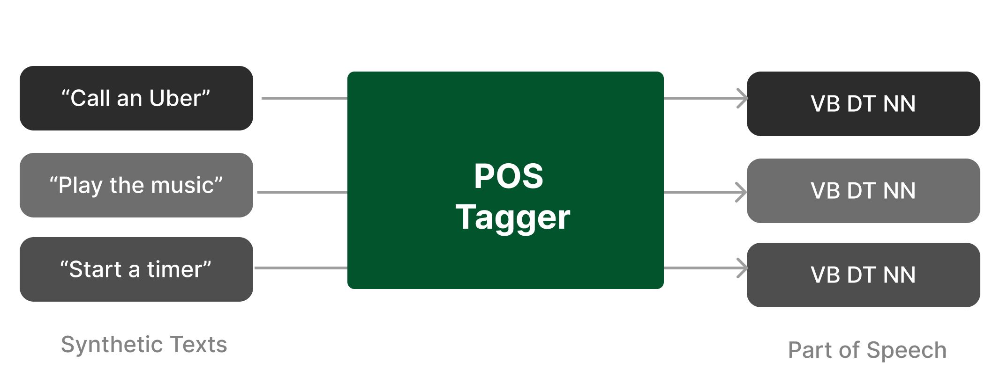 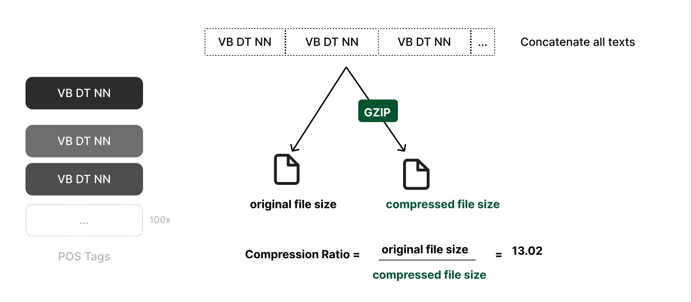
总结
我们探索了衡量LLM生成数据的语言多样性的三大类指标：
| 类别 | 关注点 | 关键指标 |
|---|---|---|
| 词汇 | 表面词语、N-gram 的重复 | N-gram (Distinct-k), N-gram 熵, 压缩比 |
| 语义 | 文本在意义上的不同 | 嵌入多样性, DCScore, 聚类惯性 |
| 句法 | 底层语法结构的重复 | 压缩比 - 词性 (CR-POS) |
在实际应用中，这些自动指标快速且易于计算，可以作为评估LLM生成数据多样性的指标。
Evals for Data Diversity
https://ycfywy.github.io/2025/12/13/Evals-for-Data-Diversity/